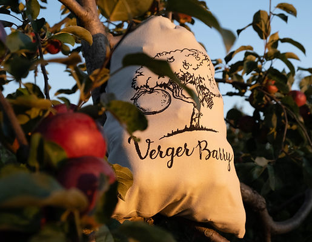

À savoir pour l'autocueillette
Période d'autocueillette
La période d'autocueillette débute à la mi-août et se termine environ à la mi-octobre.
Les dates de début et de fin pour l'autocueillette diffèrent légèrement à chaque année selon l'évolution de la saison.
Heures d'ouverture
9h à 18h en saison de cueillette et sur rendez-vous hors saison.
Tarifs
Lundi au vendredi 18$ le sac de 15 lbs.
Samedi, dimanche 20$ le sac de 15 lbs.
Règlements
Respecter les zonnes de cueillette et les variétés identifiées.
Respecter les heures d'ouverture et de fermeture.
Les chiens sont permis en laisse courte.
Respecter l'environnement et la propreté des lieux.
Nos variétés disponibles à l'autocueillette
Plus de variétés et produits disponibles en kiosque.
Toutes les pommes sont disponibles en kiosque!

Melba
La melba est bonne à croquer et se défait complètement à la cuisson; une excellente pomme à compote.
Paulared
La pomme Paulared est idéale à croquer, parfaite pour les tartes et savoureuse en compote.

Sunrise
La pomme Sunrise est excellente à déguster crue, délicieuse en salade et parfaite à croquer.
Milton
La pomme Milton est parfaite pour la compote et délicieuse à croquer.

Lobo
La pomme Lobo est délicieuse à croquer, parfaite pour une compote rosée, idéale en dessert et se défait moyennement à la cuisson.
Gingergold
La pomme Gingergold est excellente à croquer, idéale pour le cidre et le jus, ne brunit pas lorsqu'elle est coupée
McIntosh
La pomme McIntosh est polyvalente, parfaite pour une compote, un dessert, ud cidre, du jus et délicieuse à croquer.
Spartan
La pomme Spartan est excellente à croquer, parfaite pour le jus et le cidre, idéale en dessert et garde sa forme à la cuisson.
Cortland
La pomme Cortland est savoureuse à croquer, ne brunit pas une fois tranchée, idéale pour une compote rosée et garde sa forme à la cuisson.
Belmac
La pomme Belmac est savoureuse cuisinée fraîche, délicieuse à croquer, idéale en dessert et parfaite pour le jus.
Honeycrisp
La pomme Honeycrisp est délicieuse à croquer, parfaite à consommer crue sans brunir, idéale pour le cidre et le jus.
Bien plus en kiosque!
Passez au kiosque pour découvrir plus de variétés de pommes, poires, prunes, pommettes et notre vaste gamme de produits.
Sacs réutilisables

Limitons ensemble l'usage du plastique. Une nouvelle option écolo au verger!
Procurez-vous l'un de nos magnifiques sacs écologiques
réutilisables pour vos cueillettes.
Le tarif est de 5$ à l'achat et vous payez seulement le remplissage à chacune de vos visites.
Une couleur différente est assignée à chaque jour pour identifier les sacs de cueillette.